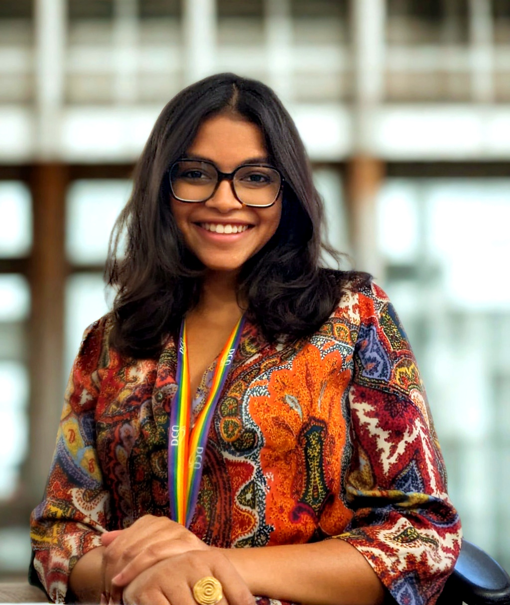
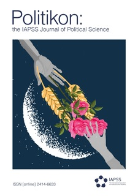
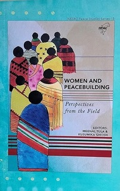
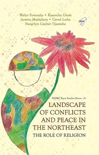

KusumikaGhosh
she / her

Reader, photographer, conversation-seeker, community-builder — and, despite everything, someone who finds the world endlessly fascinating. I am drawn to people, to streets, to the quiet and noisy ways human beings make meaning together.
I am also a scholar. As a postdoctoral researcher at the Ireland India Institute, Dublin City University, I study social movements, feminist activism, and the politics of citizenship — asking how ordinary people, especially women and marginalised communities, claim political voice, build solidarity, and reimagine what belonging and care can look like in contested democratic spaces.
Education
Doctor of Philosophy (PhD)
Dublin City University (DCU), Ireland
- Thesis: Gendered Citizenship in India: Participation and Protest as Acts of Care in the Anti-CAA/NRC Movement
- Fully funded by the Ireland India Institute and Faculty of Humanities & Social Sciences, DCU
MA, Peace and Conflict Studies
Tata Institute of Social Sciences (TISS), India
- Thesis: Gender, Migration, and Postcolonial Memory: The Impact of the 1947 Indian Partition on Women
- Research based on in-depth interviews
BA (Hons), Political Science
St. Xavier's College, India
- Thesis on women's participation in militant organisations (LTTE, Maoists, ISIS)
Diploma, Human Rights Education
St. Xavier's College, Kolkata
Research & Publications
Peer-reviewed journal articles
Strategic adaptations across borders: Mapping transnational anti-gender movements in political, institutional, and digital domains

The global rise of anti-gender movements and feminist resistance strategies: A critical analysis
How protected are the refugees: A comparative study of the contemporary states of Germany and India in light of the Geneva Convention 1951
Editorial roles
Special issue on anti-gender backlash (two-part)
Women and Peacebuilding: Perspectives from the Field
Convened the originating seminar; edited selected contributions from feminist activists and scholars.

Book
Landscape of Conflicts and Peace in the Northeast: The Role of Religion
Authored 5 of 7 chapters; co-authored remaining chapters; conceptualised project, led fieldwork, and conducted SPSS-based analysis with a research team.

In the pipeline
The Affective Republic: A Prefiguration of Southern Citizenship
Art and resistance: Space-making as an act of care in contentious politics
Feminising the Movement: Women, Citizenship, and Protest in Contemporary India
The Politics of Care in Crisis Governance
Professional Experience
Postdoctoral Research Fellow
Ireland India Institute (III), Dublin City University
- Funded fellowship to expand and publish cross-cutting research on movements, gender and urban development in Ireland, India, and Mexico
- Institute administration including website and social media; organising team member of the III Annual South Asia Conference (since 2021)
Research Assistant
Calcutta Research Group (CRG) & Institut für die Wissenschaften vom Menschen (IWM), Vienna
- Supported Europe–Asia Research Platform on Forced Migration; convened international workshop on global protection of migrants and refugees
- Co-authored reports on COVID-19 impacts on migrant workers; supported Distinguished Chair on Migration and Forced Migration Studies
Research Associate
North Eastern Social Research Centre (NESRC), India
- Led fieldwork in conflict zones across Northeast India on religion and conflict; organised national seminar on women in conflict zones
- Research contributed to Landscape of Conflicts and Peace… (2019) and co-edited Women and Peacebuilding (2021)
Research Intern
Partition Museum, Delhi
- Conducted oral-history interviews with Partition survivors; contributed to archive and multimedia collection
- Trained in oral history methods and videography
Research Intern — DECCMA Project
Centre for Environment & Development (CED-ENDEV) & University of Southampton
- Field research in the Sundarbans Delta on trafficking of women and girls after natural disasters
- Analysis of environmental and structural drivers in forced migration contexts
Teaching
KD361: The New Silk Route — Development, Democracy and Governance in Contemporary Asia
- External Module Lecturer (Module Convenor); 3rd-year UG elective, ~25 students
- Designed curriculum, assessments, and module AI-use policy from scratch
Planning for Development
- External Module Lecturer; undergraduate, Spring term 2024–25
Politics of South Asia
- Occasional Lecturer; 3rd-year UG, cohort of ~92 students
- Designed assessments and delivered all lectures
Gender and International Development
- External Module Lecturer; 2nd-year UG
- Supervised student projects and assessments
Teaching Assistant
- Tutorials and grading for Introduction to International Relations and advanced Peace Studies
- Individual thesis-writing support for final-year UG students
Public Scholarship & Presentations
Director of Social Policy & Inequity — Niti Vichaar, India · 2018–Present
Developed and led a certificate training programme in social science research, currently in its 4th cohort. Organised workshops on gender, consent, and conflict resolution; delivered consent workshops (including Loreto College Kolkata, ~85 attendees).
Public lectures available online:
Conference Presentations (selected)
Invited Seminars
Curriculum Vitae
Full academic CV covering education, publications, conference presentations, teaching, public engagement, and awards.
Download CV (PDF)Contact
Affiliation
Ireland India Institute
Dublin City University
Dublin, Ireland
On the job market
I welcome enquiries about postdoctoral fellowships, lectureships, and collaborative projects. Please get in touch.